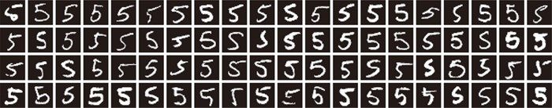
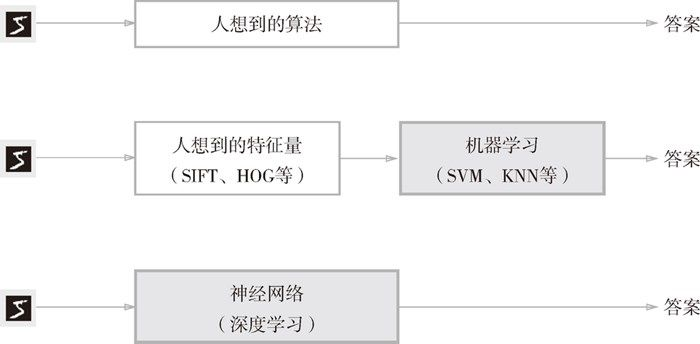

对于线性可分问题，第 2 章的感知机是可以利用数据自动学习的。根据“感知机收敛定理”，通过有限次数的学习，线性可分问题是可解的。但是，非线性可分问题则无法通过（自动）学习来解决。
对于线性可分问题，第 2 章的感知机是可以利用数据自动学习的。根据“感知机收敛定理”，通过有限次数的学习，线性可分问题是可解的。但是，非线性可分问题则无法通过（自动）学习来解决。
神经网络的特征就是可以从数据中学习。所谓“从数据中学习”，是指可以由数据自动决定权重参数的值。这是非常了不起的事情！因为如果所有的参数都需要人工决定的话，工作量就太大了。在第 2 章介绍的感知机的例子中，我们对照着真值表，人工设定了参数的值，但是那时的参数只有 3 个。而在实际的神经网络中，参数的数量成千上万，在层数更深的深度学习中，参数的数量甚至可以上亿，想要人工决定这些参数的值是不可能的。本章将介绍神经网络的学习，即利用数据决定参数值的方法，并用 Python 实现对 MNIST 手写数字数据集的学习。
数据是机器学习的命根子。从数据中寻找答案、从数据中发现模式、根据数据讲故事……这些机器学习所做的事情，如果没有数据的话，就无从谈起。因此，数据是机器学习的核心。这种数据驱动的方法，也可以说脱离了过往以人为中心的方法。
通常要解决某个问题，特别是需要发现某种模式时，人们一般会综合考虑各种因素后再给出回答。“这个问题好像有这样的规律性？”“不对，可能原因在别的地方。”——类似这样，人们以自己的经验和直觉为线索，通过反复试验推进工作。而机器学习的方法则极力避免人为介入，尝试从收集到的数据中发现答案（模式）。神经网络或深度学习则比以往的机器学习方法更能避免人为介入。
现在我们来思考一个具体的问题，比如如何实现数字“5”的识别。数字 5 是图 4-1 所示的手写图像，我们的目标是实现能区别是否是 5 的程序。这个问题看起来很简单，大家能想到什么样的算法呢？

图 4-1 手写数字 5 的例子：写法因人而异，五花八门
如果让我们自己来设计一个能将 5 正确分类的程序，就会意外地发现这是一个很难的问题。人可以简单地识别出 5，但却很难明确说出是基于何种规律而识别出了 5。此外，从图 4-1 中也可以看到，每个人都有不同的写字习惯，要发现其中的规律是一件非常难的工作。
因此，与其绞尽脑汁，从零开始想出一个可以识别 5 的算法，不如考虑通过有效利用数据来解决这个问题。一种方案是，先从图像中提取特征量，再用机器学习技术学习这些特征量的模式。这里所说的“特征量”是指可以从输入数据（输入图像）中准确地提取本质数据（重要的数据）的转换器。图像的特征量通常表示为向量的形式。在计算机视觉领域，常用的特征量包括 SIFT、SURF 和 HOG 等。使用这些特征量将图像数据转换为向量，然后对转换后的向量使用机器学习中的 SVM、KNN 等分类器进行学习。
机器学习的方法中，由机器从收集到的数据中找出规律性。与从零开始想出算法相比，这种方法可以更高效地解决问题，也能减轻人的负担。但是需要注意的是，将图像转换为向量时使用的特征量仍是由人设计的。对于不同的问题，必须使用合适的特征量（必须设计专门的特征量），才能得到好的结果。比如，为了区分狗的脸部，人们需要考虑与用于识别 5 的特征量不同的其他特征量。也就是说，即使使用特征量和机器学习的方法，也需要针对不同的问题人工考虑合适的特征量。
到这里，我们介绍了两种针对机器学习任务的方法。将这两种方法用图来表示，如图 4-2 所示。图中还展示了神经网络（深度学习）的方法，可以看出该方法不存在人为介入。
如图 4-2 所示，神经网络直接学习图像本身。在第 2 个方法，即利用特征量和机器学习的方法中，特征量仍是由人工设计的，而在神经网络中，连图像中包含的重要特征量也都是由机器来学习的。

图 4-2 从人工设计规则转变为由机器从数据中学习：没有人为介入的方块用灰色表示
神经网络的优点是对所有的问题都可以用同样的流程来解决。比如，不管要求解的问题是识别 5，还是识别狗，抑或是识别人脸，神经网络都是通过不断地学习所提供的数据，尝试发现待求解的问题的模式。也就是说，与待处理的问题无关，神经网络可以将数据直接作为原始数据，进行“端对端”的学习。
本章主要介绍神经网络的学习，不过在这之前，我们先来介绍一下机器学习中有关数据处理的一些注意事项。
机器学习中，一般将数据分为训练数据和测试数据两部分来进行学习和实验等。首先，使用训练数据进行学习，寻找最优的参数；然后，使用测试数据评价训练得到的模型的实际能力。为什么需要将数据分为训练数据和测试数据呢？因为我们追求的是模型的泛化能力。为了正确评价模型的泛化能力，就必须划分训练数据和测试数据。另外，训练数据也可以称为监督数据。
泛化能力是指处理未被观察过的数据（不包含在训练数据中的数据）的能力。获得泛化能力是机器学习的最终目标。比如，在识别手写数字的问题中，泛化能力可能会被用在自动读取明信片的邮政编码的系统上。此时，手写数字识别就必须具备较高的识别“某个人”写的字的能力。注意这里不是“特定的某个人写的特定的文字”，而是“任意一个人写的任意文字”。如果系统只能正确识别已有的训练数据，那有可能是只学习到了训练数据中的个人的习惯写法。
因此，仅仅用一个数据集去学习和评价参数，是无法进行正确评价的。这样会导致可以顺利地处理某个数据集，但无法处理其他数据集的情况。顺便说一下，只对某个数据集过度拟合的状态称为过拟合（over fitting）。避免过拟合也是机器学习的一个重要课题。